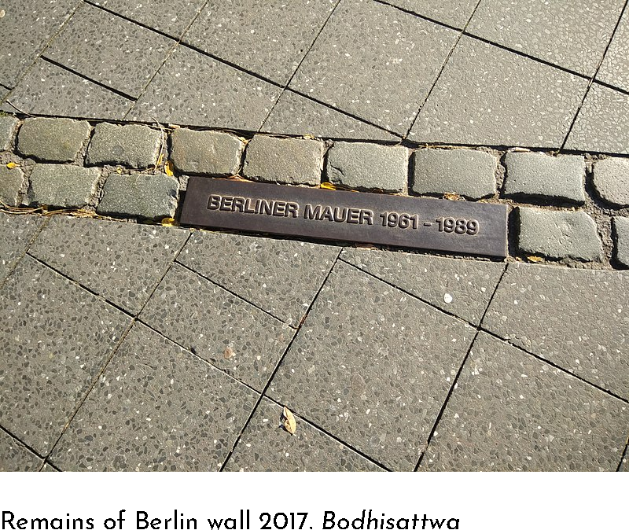
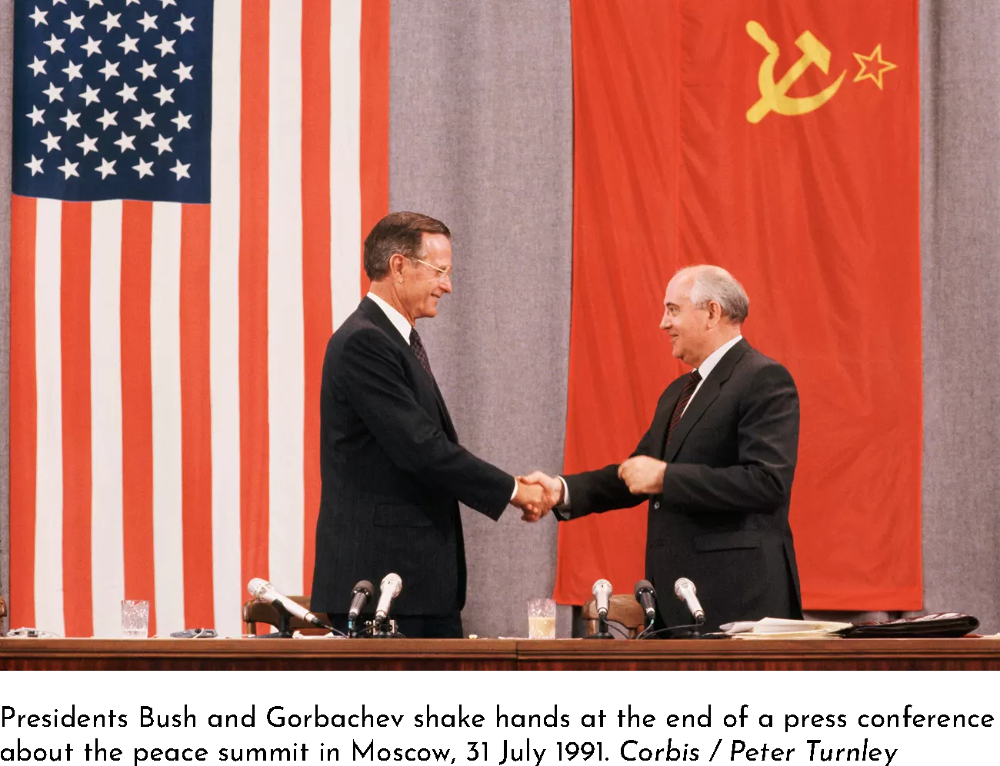
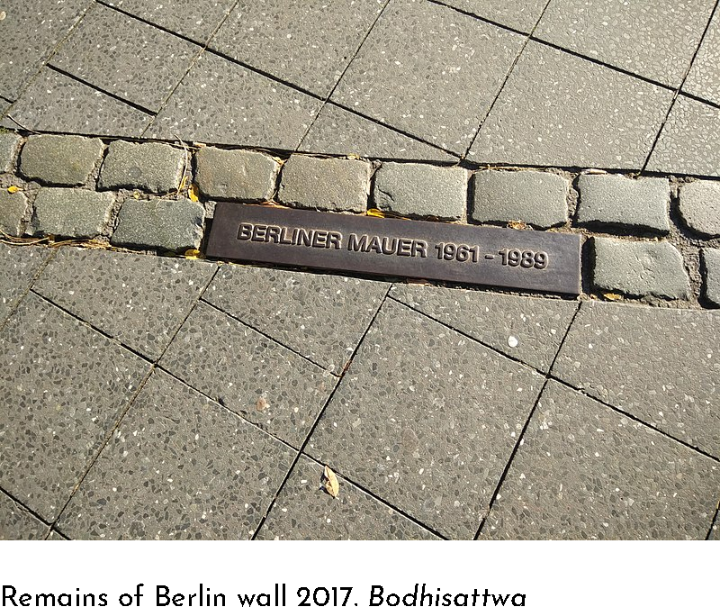
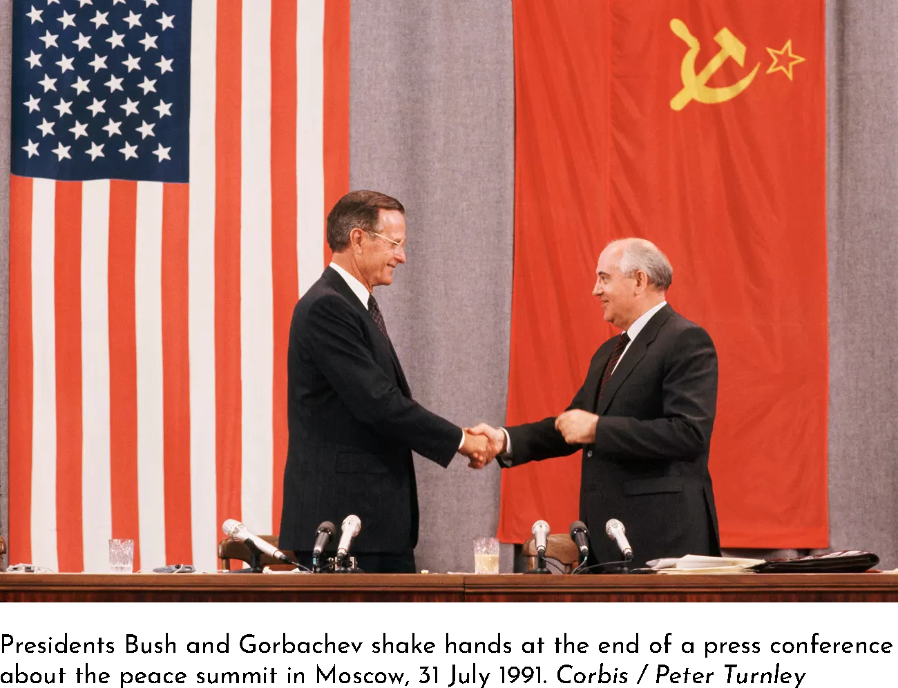

☰ Menu
How is The Berlin Wall a
turning point?
Within Germany:
For Germany The Berlin Wall represents many different things.
To start, the implementation of The Berlin Wall marked the start
of Germany's rebuilding process, for they were no long the
global terror they once were. However, the wall would qucikly
shift to represent a division in Germany, and still does today.
Despite this, the most important change the wall represents
is the end of both of the aforementioned eras. When the wall
was destroyed it marked the start of a new era for Germany,
one where they weren't a terror and weren't divided. Although
Germany is still working on rebuilding and reunifying they're
making an effort, and the wall represnets the turning point that
sparked it.
 



Globally:
Globally the fall of The Berlin Wall represented the start of the
end for the Soviet Union and Cold War. The Berlin Wall was a prime
representation of the divide between comunist and capitalist, and
when the wall fell it was the first in a series of changes that
would ultimately lead to the Soviet Union's demise. The first major
change that initiated this was Hungary opening it's borders. This
was after they converted from communist to capitalist, and showed
that other countries, even former communists, were in support of
east German's freedom. This action lead to the fall of The Berlin
Wall, which was the first dent that was put in the iron curtain, and
started a domino effect that toppled over the Soviet Union.